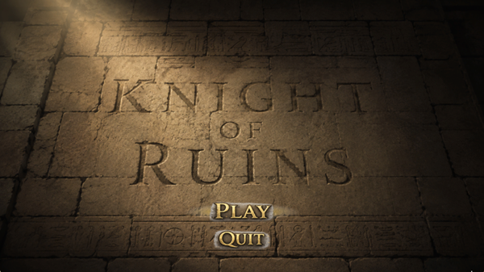
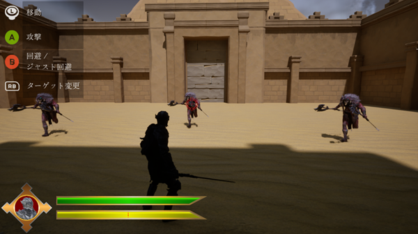

Knight of Ruinsは、ジャスト回避から反撃へ繋げる
爽快感をコンセプトに制作した3Dアクションゲームです。
操作は移動、攻撃、回避、ロックオン切り替えがあります。
プレイヤーは敵の攻撃を見極め、
タイミング良く回避することでジャスト回避が発生し、自動反撃へ繋げられます。
3段コンボやロックオン切り替えを活用しながら複数の敵と戦います。


アクションゲーム
Visual Studio C++,Unreal Engine5.4
2026/5か月
4人
雑魚敵の作成
チュートリアルのデザイン
キャラクターの死亡時と雑魚敵で使うナイアガラ
SE&BGMの素材探し
Unreal EngineのC++で3Dゲームを作ろうとして、
王道アクションゲームを作ることになりました。
最初はゲーム性をゼルダ系で作ろうとしていましたが、
UE5であることと使うアセットのデザインにより
ソウルライク系に寄せることになりました。
今回挑戦したことは、AIエネミーをC++で作ることです。
UEC++でのゲーム制作はこれが2回目で、初期段階はUEの仕様上躓くことが多々ありました。
ですが中盤あたりからAIでUEでの書き方、仕様を学びC++の書き方に慣れてきて、
作業スピードがBlueprintでプログラムするよりも早くなりました。
void AMobEnemy::OnHitMontageEnded(UAnimMontage* Montage, bool bInterrupted)
{
// モンタージュの終了通知はメインスレッド以外から呼ばれることがある
if (!IsInGameThread())
{
// 弱参照で保持し、対象が破棄されていても安全に扱えるようにする
TWeakObjectPtr<AMobEnemy> WeakThis(this);
// メインスレッドに処理を移してから、もう一度自分自身を呼び直す
AsyncTask(ENamedThreads::GameThread, [WeakThis, Montage, bInterrupted]()
{
// 移動中に対象が破棄されていないか確認してから実行
if (WeakThis.IsValid())
{
WeakThis->OnHitMontageEnded(Montage, bInterrupted);
}
});
return;
}
// ここから先はメインスレッド上で安全に実行される本処理
// （被弾状態の解除、Idle状態への復帰など）
...
}モンタージュの終了通知はメインスレッド以外から呼ばれることがあるため、
その場合はメインスレッドに処理を移してから実行し、
実行直前には対象が破棄されていないかも確認しています。
「メインスレッド以外での処理」と「消えた対象への処理」による
クラッシュを防ぎ、同じパターンを複数箇所で使っています。
最初雑魚敵たちはプレイヤーを追いかけて行動するだけだったので、
纏まって行動することが多々ありました。
そこでまず、プレイヤーに近づくとそれぞれがプレイヤーの周りを回るようにしました。
それでも場所によってはすぐに纏まってしまうことがあったため、
プレイヤーの動きに応じて左右に配置させる思考を加えたり、
攻撃直前以外はプレイヤーとの距離をムリに詰めない思考を持たせたりしました。
これらの工夫により、雑魚敵達が纏まることを減らすことができました。
このゲームはステージが2つしかなく、ボスは難しめに設定しています。
ただ、雑魚敵と戦って操作方法だけを覚え、
攻撃の仕組みや回避のタイミングを掴めないままボス戦に挑ませてしまうと、
理不尽に感じてしまう可能性があると考えました。
そこでチュートリアルで操作方法を学び、
雑魚戦でこのゲームでの戦闘を練習してもらえるよう、
雑魚戦では敵の攻撃は最低でも一回はプレイヤーに当たるようにし、
適当な戦い方をすると負けるように調整しました。
今回の制作で特に学んだのは、
工夫したことでも書いたように、ただプレイヤーに近づいて攻撃するだけでなく、
その前後に意味のある動きが必要だと学びました。
知性的に見せるために何を判断基準として行動させるべきかを考えて、
今回作った雑魚敵は、プレイヤーとの距離を判断基準として行動しています。
例としてプレイヤーが至近距離まで近づくと
攻撃または後退し攻撃の当たらない距離まで離れるようにしていており、
その一方でプレイヤーを囲む時の距離は、
プレイヤー側の攻撃は当たり、雑魚側の攻撃は当たらない距離に設定しています。
この距離感の調整は数値だけで決まるものではありません。
実際にプレイして「うまく戦えているか」「理不尽に感じないか」
「動きとして違和感がないか」という感覚的な部分を、何度も検証しながら詰めていく必要がありました。
そのためプログラムの正しさだけでなく、
体験としての面白さを両立させることの難しさを実感しました。
また、雑魚敵の行動一つにも、
距離・タイミング・周囲の状況など複数の条件を組み合わせて判断させる必要があります。
今後、より複雑な敵AIやボスの行動パターンを設計する際にも、
こうした判断基準の考え方や検証の進め方を活かしていきたいと思います。